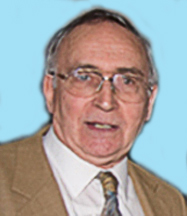

It is with sadness that we have to report the death recently, at the age of 83, of John Davies, one of the Federation’s Vice-presidents and a former Chairman of the Federation.
John was an engineer by profession and a lecturer in the subject at a tertiary college, but music was always his antidote to the trials of life. A member of the South Cheshire RMS (sadly no longer in existence), he joined the Federation committee as Vice-chairman in 2001, becoming Chairman the following year. This was at a time when there were tensions within the Federation but John was able to “steady the ship” and provided excellent leadership for the next few years before handing over the reins to the late Colin Dancer in 2011.
For the last few years of his chairmanship John also acted as deputy to the Federation’s then webmaster, George Steele. To keep in practice, he ran a sub-website for the nine associates in his immediate area (Stoke, Stone, S Cheshire, etc and several U3A groups). He operated it very efficiently and kept them all up to date with their own information as well as general FRMS information.
John will be remembered with gratitude and affection by many people in the Federation and beyond. We extend our sympathy to his wife, Rita, and members of his family.
Allan Child
FRMS Chairman